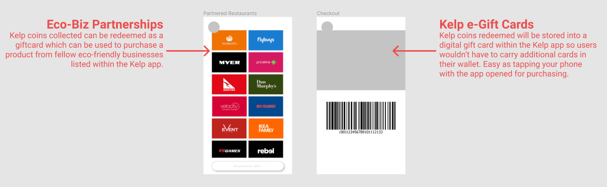
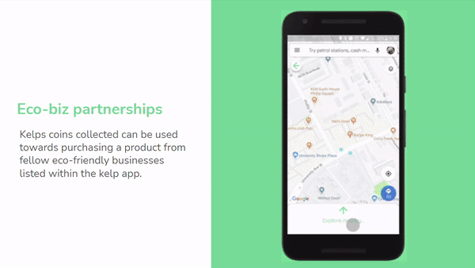

Kelp
Encouraging restaurants and customers to be more sustainable
Hackathon | uwEnergy Hacks
Position | UX Researcher /UI Designer
Duration | 48 Hours
Tools | Figma, Illustrator
Background
University of Waterloo's first sustainability focused hackathon, centered around a series of energy-related problems that exist in our world today. Presented are the most pressing issues facing the environment and develop solutions to fascinating real-world problems.
Problem
Measuring & incentivizing corporate sustainability is becoming increasingly important as consumers have been tending to support brands that align with their values. How can we better measure sustainability importance in the private sector?
Outcome
A mobile app that offers a platform for private sectors to publicize their sustainable features in the service or product they offer, attracting environmentally focused individuals incentivising their use of the service/product.

User Research
My team and I started our research with identifying our target market. We concluded that our focus is to encourage restaurants and fast food chains to be more individuals who have the opportunity to work from home or their roles permits them to.
User Interviews
To begin the process in creating the solution, we determined key aspects to implement in the mobile app as guided by the following problem statements.
Personas
Meet Kayla and Steven, our main personas for the purpose of this design challenge.
Problem Analysis
To begin the process in creating the solution, I ensured that I was able to map out the interaction and navigation process of both a customer and a franchise owner - How can I ensure the franchise owner can easily showcase their sustainable practices and attract environmentally- conscious customers like Kayla?
Design Process
Visual Identity
In order to create an interactive and informative app for both users, the app itself must have a simple design with fonts that are easy to read and minimal colours used but can easily be identified as a platform that encourages sustainability.
Wireframes
Being pressed for time I rapidly began designing both low and high-fidelity wireframes for user testing and to show our mentors for the hackathon.
Feedback + Iterations + Testing
Using the feedback received from the user testing, my team and our mentor for the hackathon I thought about how we can not only continue engagement between customers and business, but also how individuals can continue using the mobile platform. What keeps our two users of the app engaged? How do we increase longevity of use?
Award System
Customer users of the app are able to redeem Kelp coins which can be used towards other restaurants who are fellow advocates for the environement (or are evironmentally-concious) and partakes in sustainable practices.
The Solution
After receiving feedback and iterating my wireframes, I moved on to creating the finalized high fidelity designs and revisited my problem statements and guiding questions.

Interact with It!
Play around with the prototype however you want. Experience Kelp, the environmentally-concious mobile app.
Reflection
Rapid prototyping is “rapid” for a reason. Near the end of the hackathon I was running out of time with designing the entire user interface. I’ve yet to test out the workflow and navigation process of the UIs - I was very caught up on creating a finalized product that we ended up not solving the problem as we anticipated.
Continuously referencing the problem brief and asking help from mentors goes a long way. After presenting our idea, the judges noticed that our solution did not directly solve the problem, we got lost in the design that we misinterpreted the problem brief and missed the private sector aspect of the challenge.